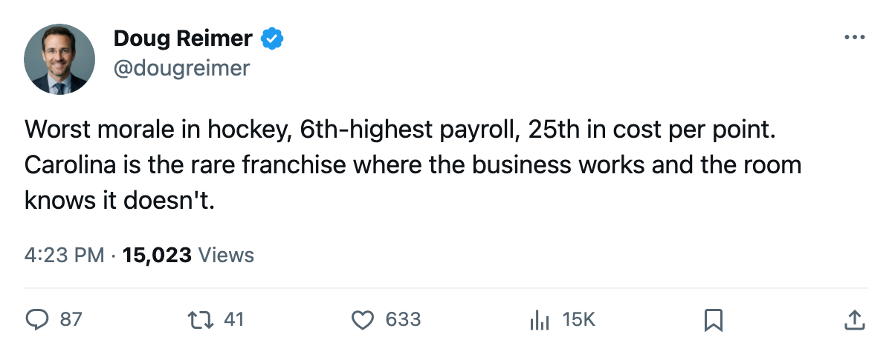
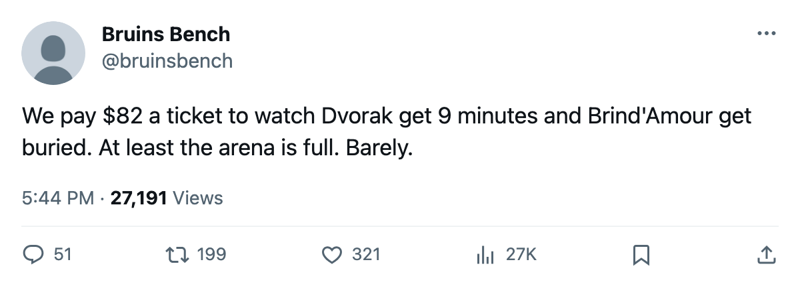

87.1 Morale, $1.48M a Point, 14 Expirings: Carolina Spends Like a Contender and Sits 11th in the East
The Hurricanes carry the league's unhappiest room on a 6th-highest payroll, and their two most expensive players walk in July.
 Doug ReimerAnalytics editor, ex-video coach · The Slot Report
Doug ReimerAnalytics editor, ex-video coach · The Slot Report
 Carolina Hurricanes have the lowest club morale in hockey at 87.1, tied with
Carolina Hurricanes have the lowest club morale in hockey at 87.1, tied with  Edmonton Oilers. They carry a $65.29M payroll, 6th-highest in the league. They pay $1.48M per point, 25th-best. They sit 11th in the East at 44 points.
Edmonton Oilers. They carry a $65.29M payroll, 6th-highest in the league. They pay $1.48M per point, 25th-best. They sit 11th in the East at 44 points.
They bought a contender's roster and are getting a lottery-adjacent return. Fifteen men in this league carry morale at 77 or below. Two of them wear Carolina sweaters:  Radek Dvorak79 at 72 and
Radek Dvorak79 at 72 and  Mike Ricci77 at 77. Both are on the bottom-15 list in the Bureau's Morale Scale, and both are buried on the third line.
Mike Ricci77 at 77. Both are on the bottom-15 list in the Bureau's Morale Scale, and both are buried on the third line.
Carolina has 14 players with one year or less remaining on their contracts. The two most expensive are  Jeff O'Neill86 ($6.92M, overall 86) and
Jeff O'Neill86 ($6.92M, overall 86) and  Kevin Weekes88 ($6.23M, overall 88). Both walk in July if the Hurricanes do not extend them, and both would command more than their current deals in free agency given their grades.
Kevin Weekes88 ($6.23M, overall 88). Both walk in July if the Hurricanes do not extend them, and both would command more than their current deals in free agency given their grades.
The Expiring Ledger
| Player | Pos | OVR | Salary | Yrs Left | Morale |
|---|---|---|---|---|---|
| Jeff O'Neill | RW | 86 | $6.92M | 1 | 87 |
| Kevin Weekes | G | 88 | $6.23M | 1 | 84 |
| Radek Dvorak | RW | 79 | $3.20M | 2 | 72 |
 Steve Rucchin78 Steve Rucchin78 | C | 78 | $3.00M | 1 | 89 |
| Mike Ricci | C | 77 | $2.60M | 1 | 77 |
Dvorak at 72 morale and 9.6 minutes a night on the third wing is not a man who believes he is valued. Ricci at 77 and 13.9 minutes is not far behind. Both sit at the top of the Bureau's Morale Scale basement, and both are on the wrong side-line for men rated 79 and 77.

The Ice-Time Problem
The Bureau's mis-slot column flags 2 players at Carolina:  Rod Brind'Amour82, rated 82, sits on the third center slot while Rucchin at 78 runs the first power-play unit. Dvorak at 79 occupies the third right wing while
Rod Brind'Amour82, rated 82, sits on the third center slot while Rucchin at 78 runs the first power-play unit. Dvorak at 79 occupies the third right wing while  Jaroslav Svoboda70 at 70 draws defensive-zone looks. The coach has chosen to trust a 78 on the man advantage over an 82 and a 70 on the penalty kill over a 79. The two men making 87.1 average morale across the room can see it.
Jaroslav Svoboda70 at 70 draws defensive-zone looks. The coach has chosen to trust a 78 on the man advantage over an 82 and a 70 on the penalty kill over a 79. The two men making 87.1 average morale across the room can see it.
The Business of Being Unhappy
Carolina Hurricanes turns $15.57M in profit on $56.68M in revenue. Attendance is 16,400 at $82 a seat. Prestige sits at 603, dead-last territory among franchises that have never won a Cup. The operation is solvent; the product is not.
Carolina plays 39 games from here. They are 2 points back of 8th-place  Philadelphia Flyers with the same number of games played. The gap to the playoff line is small enough to believe and large enough that the 87.1 in the locker room means nobody does.
Philadelphia Flyers with the same number of games played. The gap to the playoff line is small enough to believe and large enough that the 87.1 in the locker room means nobody does.
The desk's read: this is a team in the last month of believing the current core can close the gap. If they do not extend O'Neill and Weekes before the trade deadline (2006-03-19), they will be sellers with no buyer's premium. Nobody trades for a team in 11th with the worst morale in hockey and two pending unrestricted free agents whose best years are in their rear-view.
The 28 injury spells and 208 days lost don't explain it. $65.29M buys 44 points at $1.48M a point, and the men who carry the heaviest salaries know it.

